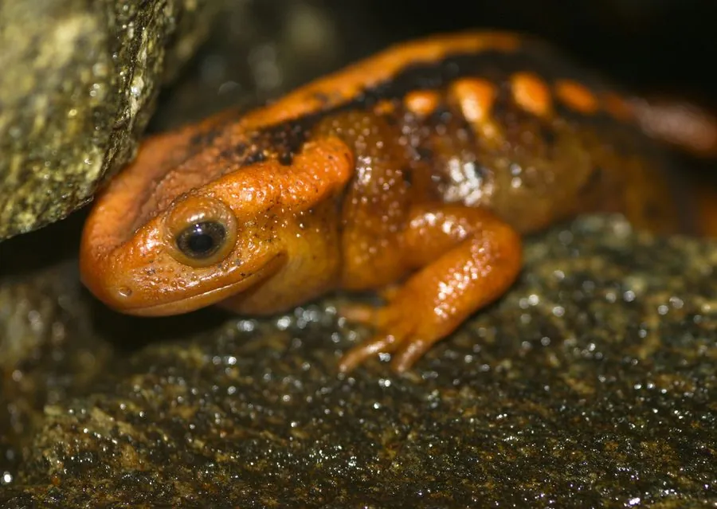

两栖动物 · 动物界
红瘰疣螈 Tylototriton shanjing

云南等地特有的疣螈，黑色身体两侧排列着橙红色瘰粒，像一串红珠子，栖息于山地溪流附近，为国家二级保护动物。
- 分类
- 门脊索动物门纲两栖纲目有尾目科蝾螈科属疣螈属
- 栖息环境
- 海拔 1000–2500 米的常绿阔叶林溪流与潮湿落叶层
- 地理分布
- 中国云南西部和南部及邻近东南亚山地
- 保护级别
- IUCN 易危（VU）；中国国家二级保护动物
物种志
红瘰疣螈体长 15–20 厘米，身体粗壮，皮肤粗糙，背面呈黑色或黑褐色，头部两侧、背脊两侧和体侧排列着橙红色、朱红色的疣粒，像一串串红珠子，因此得名；腹部黑褐色，四肢短粗，尾侧扁。
它分布于中国云南西部和南部、以及邻近的东南亚山地，栖息于海拔 1000–2500 米的常绿阔叶林溪流、水塘和潮湿的落叶层中，白天藏在石缝、树根和土洞中，夜间捕食昆虫、蠕虫、蛞蝓和小型节肢动物。繁殖期在 5–8 月，雌螈在水草或石下产卵，幼虫有外鳃。红瘰疣螈的皮肤含有刺激性毒素，民间曾误传其有药用价值而遭捕捉，加上森林砍伐，野生种群下降，中国将其列为国家二级保护动物。
形态与习性
- 食性昆虫、蠕虫、蛞蝓和小型节肢动物
- 体长约 15–20 cm
- 繁殖5–8 月在水草或石下产卵，幼虫有外鳃
- 活动节律夜行性，白天藏在石缝和土洞中
- 毒性皮肤含刺激性毒素，接触后需洗手
- 保护中国国家二级保护动物
趣味知识
- 红瘰疣螈身体两侧的橙红色疣粒像一串红珠子，是它的标志。
- 它曾被误传有药用价值而遭大量捕捉，如今受到严格保护。
- 红瘰疣螈是中国云南特有种群的核心成员，对森林溪流依赖很强。